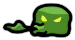
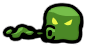
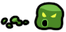

Slime xanh gốc · Attack
Replay sprite + đường cong scale trích từ APK 2.5.1. Giữ pivot và offset của sprite. Không bao gồm hiệu ứng/logic chiến đấu ngoài clip.



Clip 1,517 giây · 4 sprite attack riêng + sprite idle trước/sau.
Đây là động tác phun dịch, không phải cắn. Không nhập asset gốc vào game ta.